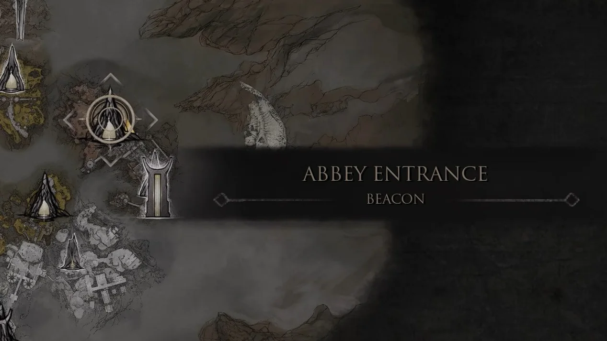
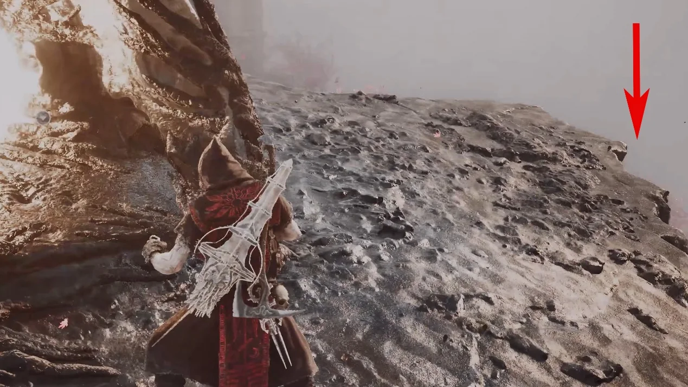
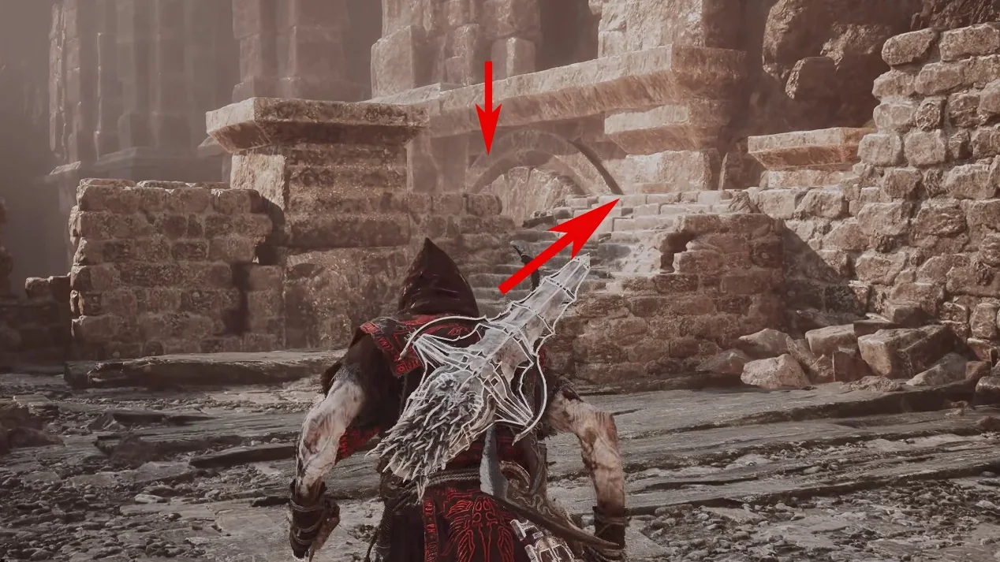
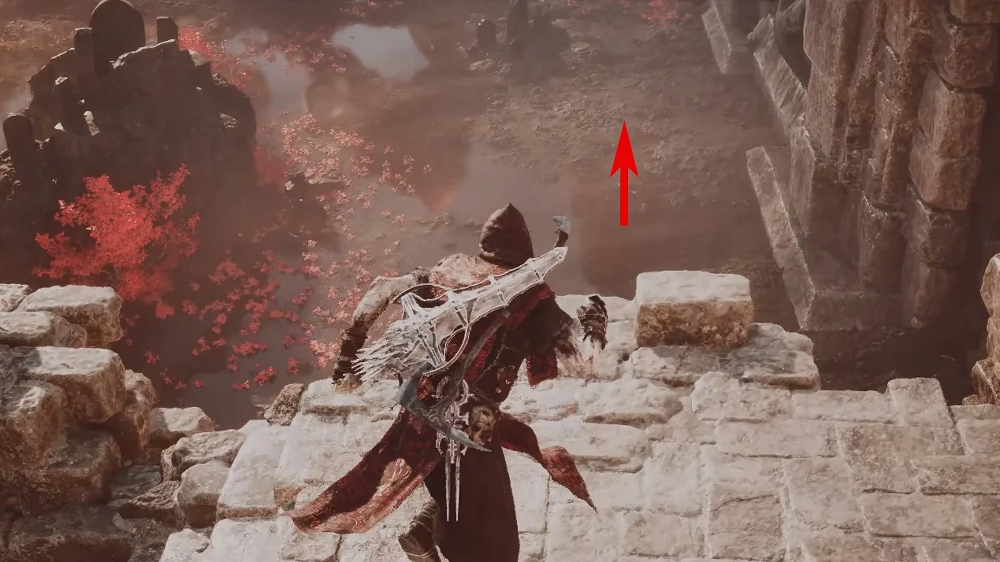
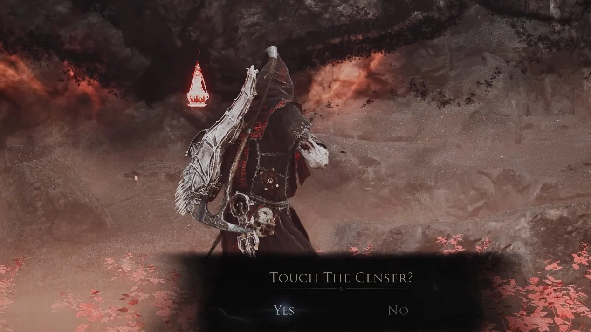
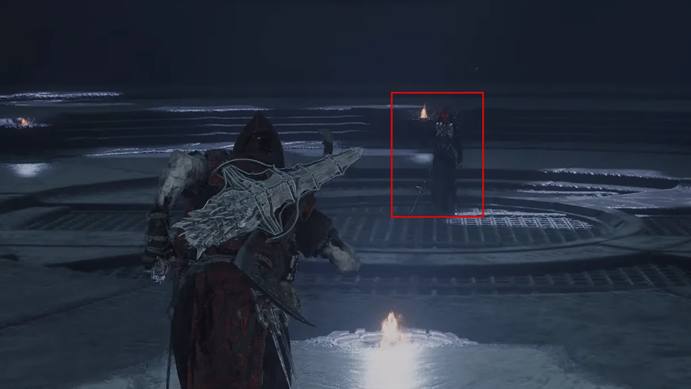
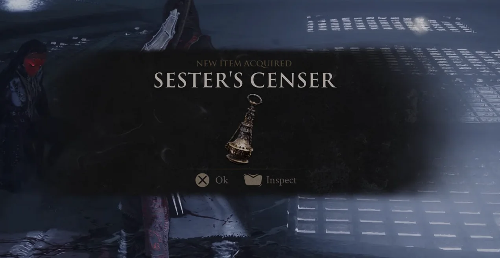
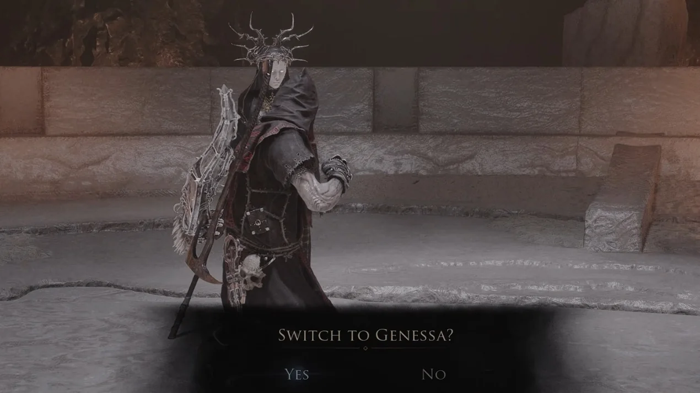

Shell acquisition · Mammon
How to get
Genessa
From Abbey Entrance Beacon, reach Revenant Graves, complete Sester's Censer, then return to Marrow Keep and offer it to Genessa.
- Region
- Mammon
- Starting point
- Abbey Entrance Beacon
- Key item
- Sester's Censer

Route 01Travel to Abbey Entrance Beacon.

Route 02Drop down from the right side of the Beacon, as marked.

Route 03Follow the arrow through the ruins, climb the steps and take the marked drop.

Route 04Continue along the route until you arrive at Revenant Graves.

Route 05At the censer, choose Touch The Censer? and select Yes to enter Sester's Censer.

Route 06Complete the encounter inside the Censer by defeating the boss.

Route 07Collect Sester's Censer, then leave and return to Abbey Entrance Beacon.

Route 08Return to Marrow Keep, find Genessa and select the official Offer Sester's Censer interaction. Complete the scene to unlock Genessa.